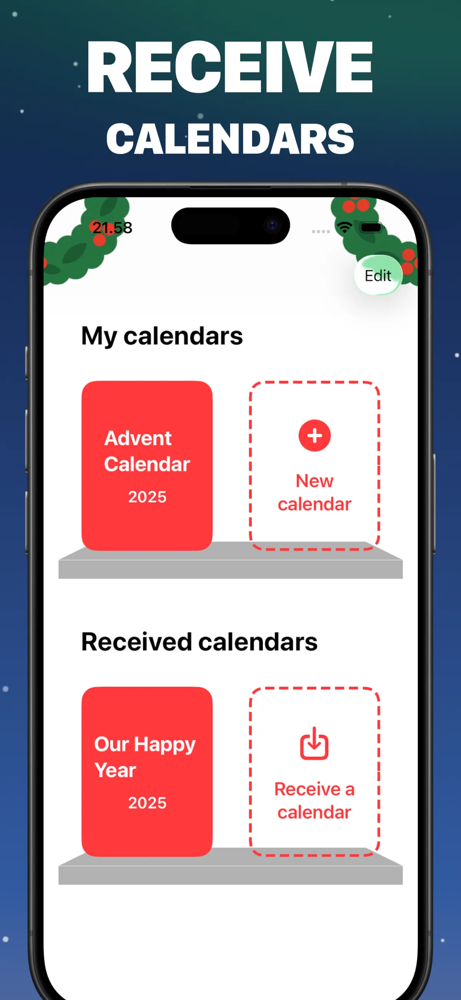

An Advent Calendar for Grandparents: A Daily Dose of the Grandkids
Grandparents don't want chocolate behind a door. They want the kids. An advent calendar for grandparents gives them exactly that: every December morning, a new photo, a drawing fresh off the kitchen table, or a twenty-second video of "good morning grandma!" — twenty-four days in a row, ending on Christmas Eve.
If they live far away, this might be the best thing you send them all year, and it costs nothing.
24 door ideas grandma and grandpa will love
- Photos of the kids — this year's highlights, one per door
- "Then and now" pairs — the grandkid at 2 and at 9 in the same pose
- Drawings and crafts — photograph the fridge art before it's replaced
- Video messages — a joke of the day, a song rehearsed at school, "we miss you"
- Old family photos — scan a few from their own albums; day 24 hits different when it's their wedding photo
- Messages from the kids — dictated verbatim, spelling mistakes preserved
- The snowman door — yes, grandpa will play with it
Will grandparents manage the tech?
This is the part designed to be easy. There is no account, no login, and no password — the two hardest words in grandparent tech support don't apply. They install the free app once, tap the calendar file you sent (by email, WhatsApp, or AirDrop when you visit), and it appears on their shelf. After that it's one tap on today's door each morning.
It works on iPhone and iPad — and on the Mac too. If they use a shared family iPad, even simpler: set it up yourself when you're there in November.

Step by step
- Install the free Advent Maker app and create a New calendar.
- Fill the 24 doors — the photo library work of one evening.
- Tap Share calendar and send the file by email or WhatsApp; call them while they open it the first time.
- From December 1st, one door a day. Expect a thank-you call around December 3rd.
Photos stay private: the file goes directly from your device to theirs, with no upload to any service — a real consideration when the content is your children, daily. More on that in the virtual advent calendar guide.